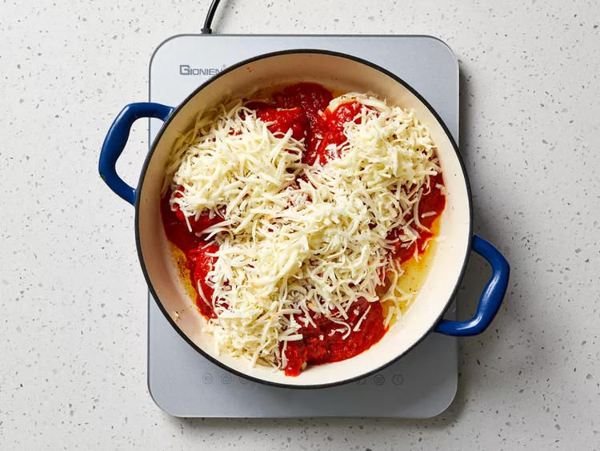

This baked chicken marinara could not be easier. Seasoned, pan-seared chicken breasts bake in the same skillet with marinara and mozzarella for a cozy, comforting dinner.

This stuffed eggplant recipe is healthy, filling, and will please even the pickiest eaters.
Gather all ingredients. Preheat the oven to 375 degrees F (190 degrees C) with racks in upper and lower third positions.
Sprinkle both sides of chicken evenly with salt and Italian seasoning. Heat oil in a deep, large oven-safe skillet over medium-high heat. Add chicken and cook until golden brown on both sides, 3 to 4 minutes per side.
Pour marinara sauce evenly over chicken and sprinkle with mozzarella. Cover with aluminum foil.
Bake on the lower third rack in the preheated oven until cheese is melted, the sauce is bubbling around the edges, and a thermometer inserted into thickest portion of chicken registers 165 degrees F (74 degrees C), 20 to 25 minutes.
Remove skillet from oven and remove foil. Increase oven temperature to broil. Once preheated, return skillet to upper third rack and broil until cheese is lightly browned in spots, about 2 minutes.
Garnish with fresh basil and serve with pasta.